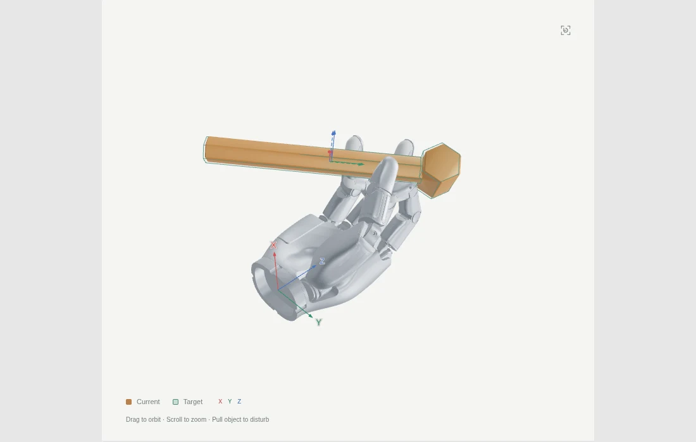

Learning In-Hand 6D Object Pose Reaching
Abstract
In-hand manipulation allows multi-fingered dexterous hands to reconfigure grasped objects without releasing and regrasping them. This improves manipulation efficiency by reducing repeated grasp acquisition and large arm motions. However, most learning-based methods focus on reorientation, continuous rotation, or translation, whereas many tasks require joint control of object position and orientation. We formulate this capability as in-hand 6D object pose reaching: starting from an existing grasp, coordinated finger motions move the object to a palm-relative target pose. We present POISE (Palm-relative Object reaching In SE(3)), a sim-to-real reinforcement learning framework for this task. POISE combines diverse stable-grasp initialization, goal- and geometry-conditioned control, an adaptive 6D goal curriculum, and a compact reward scheme for pose reaching and grasp preservation. Diverse initialization raises held-out-grasp success from 40.1% to 51.5% and post-drop recovery from 33.8% to 72.9%; the curriculum raises full-range success from 6.2% to 59.5%, while the grasp-maintenance reward improves grasp stability. In real-world experiments, POISE reaches successive 6D targets without manual reset across multiple object geometries and wrist orientations, and recovers from external disturbances.
Interactive Demo
Open full page ↗
Click inside the simulation to use keyboard controls. MuJoCo browser simulation; results may differ from IsaacLab and hardware.